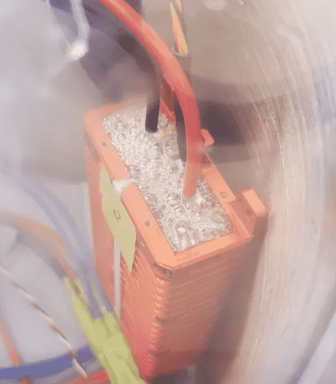
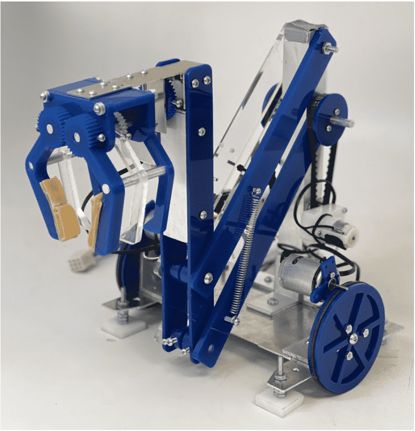
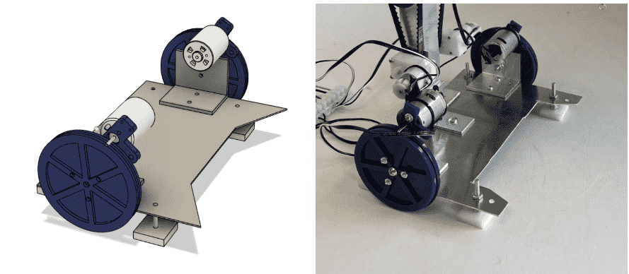
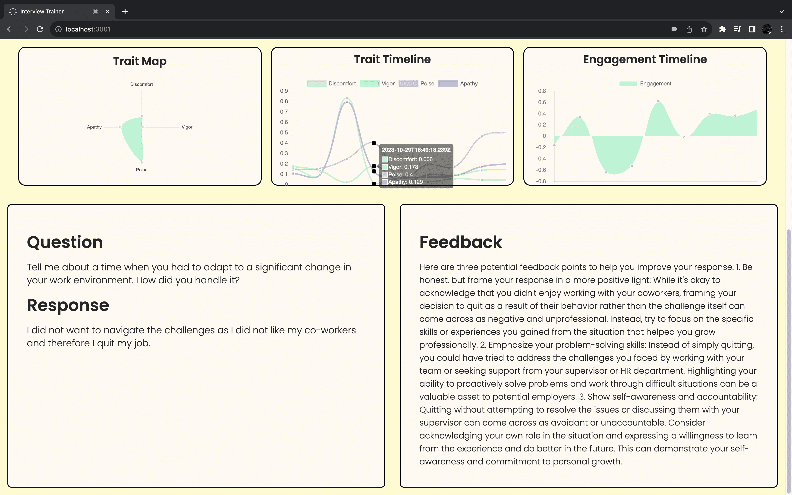

Electric Mountain Bike
A converted hardtail with 1hp under continuous improvement!
Read more...
Converted Mountain Bike
This is my electric mountain bike which is a converted Haro hardtail
using a Bafang 750W motor + controller and a 11000 mAh 52V battery
pack. I built this over the summer of 2021 and have been using it to
speed around campus. It has a top speed of 22 mph on flat ground!

Optical Flow for UAVs
Investigated optical flow for GPS-denied operations as part of my 2023
summer internship.
Read more...
Optical Flow Investigation

Over the summer of 2023, I worked with several other engineers to investigate options for GPS-denied UAV station keeping.

One of the optical flow sensors that was investigated was the openMV because of its open-source optical flow implementation in micropython.
ESC monitoring
Developed ESC health checking system in C++ for my 2022 summer
internship.
Read more...
Firmware for UAV Health
Over the summer of 2022 I worked with ESCs and Ardupilot autopilot firmware. My goal was to add diagnostic information to a ground station HUD by having our ESCs report information about voltage and connectivity over CAN bus.
Robot Competition - 1st place
Built a robot with a claw and 4-bar in under 3 weeks.
Read more...
Claw Robot

My team and I built a robot with a 3 pronged claw and 4-bar lift using a limited selection of parts. The competition was for the
Intro to Mechanical Design class, and the objective of the game was to retrieve objects with different properties from 4 locations
at different heights.

The component that I did the most work on was the drivetrain. Given two high-speed and low torque motors, I had to design a method
to allow our robot to move around the game field. I opted for a friction drive that held the motor shafts onto the wheels as it was
a straightforward power transmission that created a large gear ratio between the motor shaft and the wheel.
Rhetoric
An AI interview prep site that uses tone analysis and LLMs to help you practice for interviews.
Read more...
Rhetoric
Rhetoric is an AI interview prep website that I built with my team during Calhacks 2023, where we stayed up for 48 hours learning and coding in Python and Javascript. During the process of creating this app, I learned a lot about working effectively as a team and building something from the ground up.